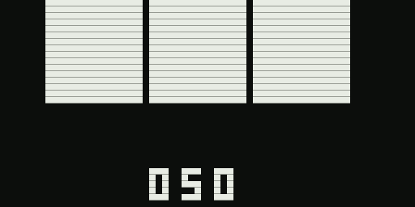
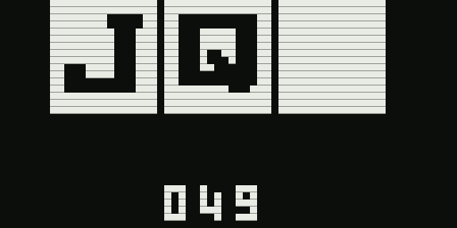
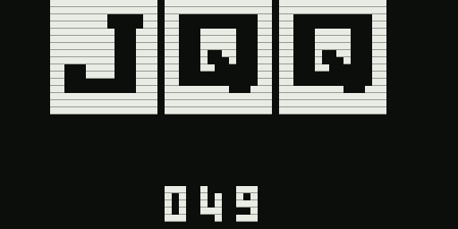

Three Reel Video Poker Machine
J. Panos · DREAMER no. 3 (1980-11) p. 10 1K RAMplayable, see notes



A three-reel fruit-machine style game that starts you on 50 points and charges one point per spin. Pairs and triples of 9, 10, J, Q, K, A and 7 pay out according to a table printed in the article. After an A-A-A or 7-7-7 jackpot you must press A to collect it.
Keys
F spins the reels (costs 1); after a jackpot C cancels it and A adds it to the score.
Files
| File | Version | Load | Run |
|---|---|---|---|
| Three Reel Video Poker Machine.d68 | main | 0080-03FF | C000 |
Listing as transcribed (with notes): three_reel_video_poker_machine.txt
Source
DREAMER no. 3 on archive.org, p. 10 (PDF page 12). Author: J. Panos.
Corrections applied
- Issue 9 improvement by J. Panos applied: 0202 CA0F -> C80F, 0204 CB0F -> CD0F, 0206 CC0F -> CE0F, 027E 72FF -> 7201, 0286 3200 -> 3220 (stops the 9s showing at load and speeds up the cards).
- 00D0 D458 -> D45B (every other card draw is D45B: 11-row sprites spaced 0B apart; typewriter font confuses 8 and B; not a published erratum).
Open doubts
- The jackpot path was not tested.
- 03B8 38B8 (sprite data) kept as printed, not double-checked.